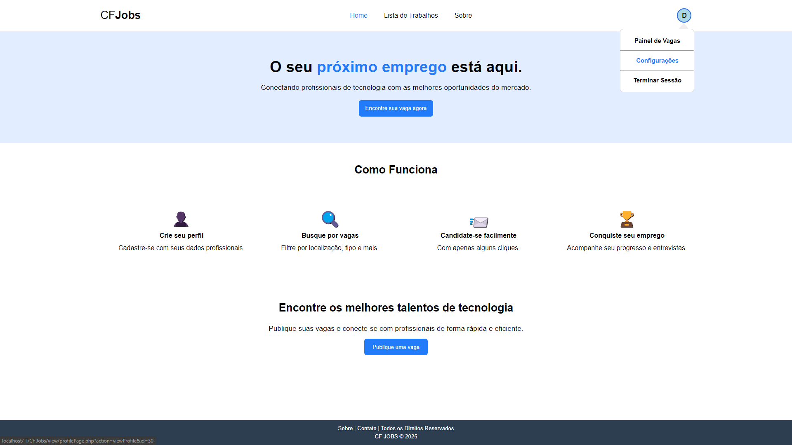
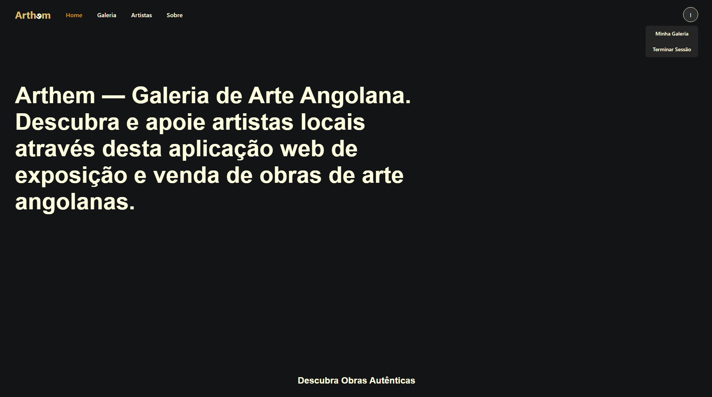
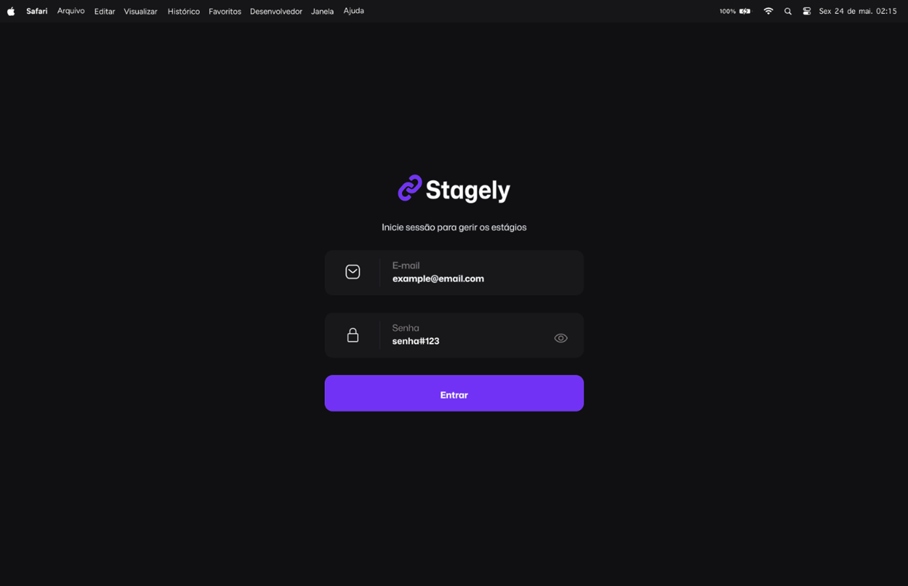
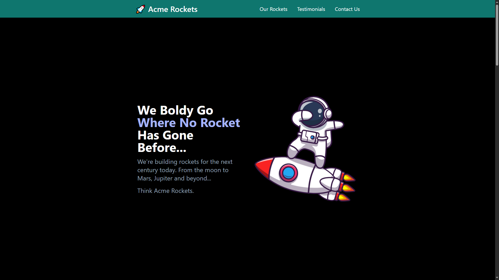

Meus Projectos
Conheça alguns dos projectos que desenvolvi com paixão e dedicação

CF Jobs
Plataforma de gestão de oportunidades de emprego desenvolvida com HTML5, CSS3, JavaScript PHP e MySQL. Interface intuitiva que permite aos utilizadores explorar e candidatar-se a posições de trabalho de forma simples e eficaz.

Arthem
Aplicação web para exposição e venda de obras de arte angolanas. Desenvolvida com PHP e MySQL no backend junto com as tecnologias HTML5, CSS3 e JavaScript no frontend, oferecendo uma experiência fluida e responsiva para os utilizadores explorarem novos artistas e comprar obras de arte.

Stagely
Plataforma para gestão e acompanhamento de estágios em instituições de ensino. Sistema que permite aos utilizadores organizar, acompanhar e gerenciar estágios de forma eficiente.
Frontend: Denil Dinis & Aguinaldo Konzo
Backend: Benedito Kapolo & Isaías Sebastião

Acme Rockets
Landing Page criada usando os conhecimentos aprendidos no curso de TailWindCss com o Professor Dave Gray.
Github